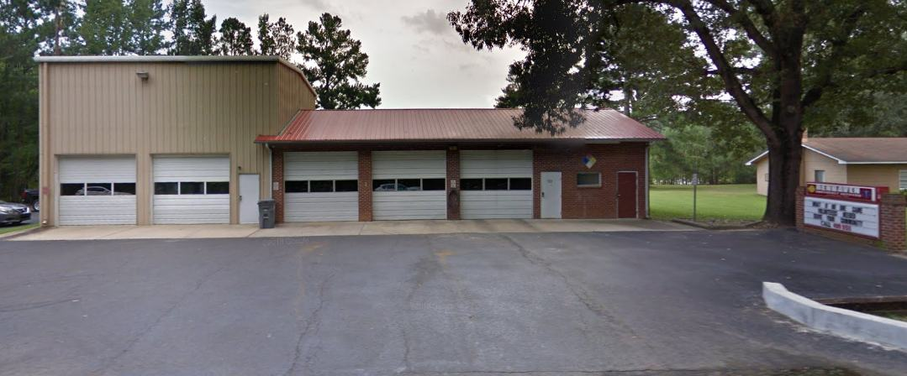

Station 1
BBQ
Also called Barbecue in older department pages. The street name is Barbeque Church Road.
- Address
- 722 Barbeque Church Rd
Sanford, NC 27332 - Non-emergency
- 919-499-9511
- Emergency
- 911
Station photograph. A current photo will replace this one when the department provides it.